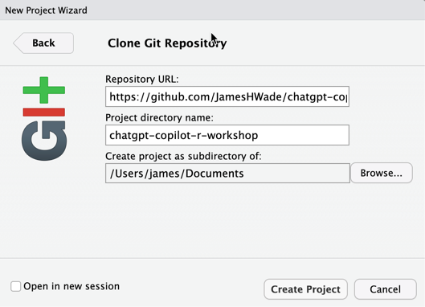

Generative AI in RStudio
Using GitHub Copilot, ChatGPT, and more in your favorite IDE
The Plan for Today
My plan is to talk as little as possible and let you all play with the tools. I’ll give a brief overview of the tools and then we’ll jump into an interactive workshop.
It may take a few minutes to setup your environment. The best way to do this is to clone this repo and open the project in RStudio. Here’s a link to the repo: chatgpt-copilot-r-workshop.
Clone Workshop Materials
There are two easy ways to clone the repo. You can use RStudio built-in buttons or the {usethis} package.
To clone the repo, open RStudio and go to File > New Project > Version Control > Git and paste in the following URL: https://github.com/JamesHWade/chatgpt-copilot-r-workshop.git.
You can also use the following code to clone the packages we’ll be using today.
# install.packages("usethis")
require(usethis)
create_from_github("jameshwade/chatgpt-copilot-r-workshop",
fork = FALSE)This repo uses {renv} to help create a reproducible environment. When you clone and open the package in RStudio, you should be prompted to install the packages.
Suggested Resources
- GitHub Copilot in RStudio, it’s finally here! by Tom Mock, Product Manager of RStudio Workbench
{gptstudio}{gpttools}{chattr}- A package to integrates LLM’s with the RStudio IDE by Edgar Ruiz, Posit Software Engineer